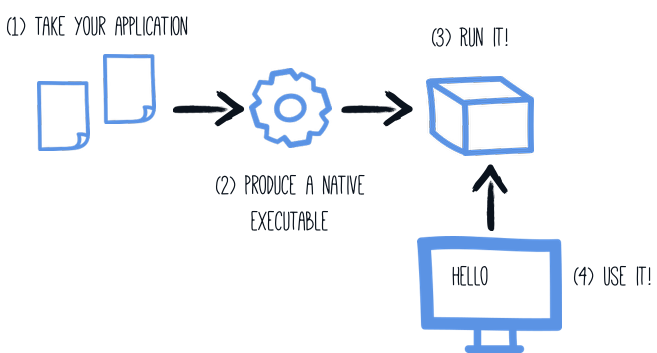
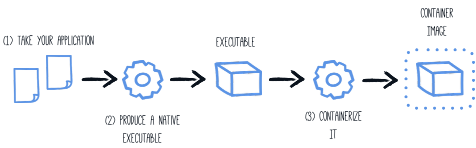

Building a Native Executable
このガイドでは以下をカバーしています:
-
アプリケーションをネイティブ実行可能ファイルにコンパイル
-
ネイティブ実行可能ファイルのコンテナーへのパッケージング
-
ネイティブ実行可能ファイルのデバッグ
このガイドは、入門ガイド で開発されたアプリケーションを入力としています。
GraalVM
ネイティブな実行可能ファイルをビルドするには、GraalVM のディストリビューションを使用する必要があります。ディストリビューションは3つあります。Oracle GraalVM Community Edition (CE)、Oracle GraalVM Enterprise Edition (EE)、そして Mandrel です。Oracle ディストリビューションと Mandrel ディストリビューションの違いは以下の通りです。
-
Mandrelは、Oracle GraalVM CEのダウンストリームディストリビューションです。Mandrelの主な目的は、Quarkusをサポートするために特別に設計されたネイティブ実行可能ファイルを構築する方法を提供することです。
-
Mandrel のリリースは、アップストリームのOracle GraalVM CEコードベースから派生したコードベースから構築されており、わずかな変更しか行われていませんが、Quarkusネイティブアプリには必要ない重要な除外事項がいくつかあります。これらのリリースは、Oracle GraalVM CEと同じ機能をサポートしており、機能に大きな変更はありません。特筆すべきは、多言語プログラミングのサポートが含まれていないことです。これらの除外の理由は、大多数のQuarkusユーザーにより良いレベルのサポートを提供するためです。また、これらの除外は、Oracle GraalVM CE/EEと比較して、Mandrelの配布サイズが大幅に縮小されていることを意味しています。
-
Mandrel is built slightly differently to Oracle GraalVM CE, using the standard OpenJDK project. This means that it does not profit from a few small enhancements that Oracle have added to the version of OpenJDK used to build their own GraalVM downloads. These enhancements are omitted because upstream OpenJDK does not manage them, and cannot vouch for. This is particularly important when it comes to conformance and security.
-
Mandrelは現在のところ、Linuxのコンテナ化された環境をターゲットとしたネイティブ実行ファイルのビルドにのみ推奨されています。つまり、Mandrelユーザーは、コンテナを使用してネイティブ実行可能ファイルを構築することが推奨されます。macOS用のネイティブ実行ファイルをビルドする場合、Mandrelは現在そのプラットフォームをターゲットにしていないため、代わりにOracle GraalVMの使用を検討するべきです。ベアメタルのLinux上で直接ネイティブ実行可能ファイルをビルドすることも可能です。詳細は Mandrel README and Mandrel のリリースを参照してください。
前提条件
このガイドを完成させるには、以下が必要です:
-
約15分
-
An IDE
-
JDK 11+ がインストールされ、
JAVA_HOMEが適切に設定されていること -
Apache Maven 3.8.1+
-
A working container runtime (Docker or Podman)
-
使用したい場合、 Quarkus CLI
-
Mandrel or GraalVM installed and configured appropriately
-
入門ガイドで開発したアプリケーションのコード
|
Supporting native compilation in C
動作するC言語の開発環境があるとはどういう意味でしょうか?
|
Configuring GraalVM
|
GraalVMをインストールできない場合は、マルチステージのDockerビルドを使用して、GraalVMを含むDockerコンテナー内でMavenを実行することができます。このガイドの最後にこれを行う方法の説明があります。 |
Version 22.0.0 が必要です。コミュニティエディションで大丈夫です。
-
まだの場合は、GraalVM をインストールします。これにはいくつかのオプションがあります:
-
https://github.com/graalvm/mandrel/releases または https://github.com/graalvm/graalvm-ce-builds/releases から適切なアーカイブをダウンロードし、他の JDK と同じように解凍します。
-
-
ランタイム環境を構成します。
GRAALVM_HOME環境変数をGraalVMインストールディレクトリーに設定します。例えば、export GRAALVM_HOME=$HOME/Development/graalvm/macOS (Mandrel ではサポート対象外) では、変数を
Homeのサブディレクトリに指定します:export GRAALVM_HOME=$HOME/Development/graalvm/Contents/Home/Windowsでは、コントロールパネルから環境変数を設定する必要があります。
scoop でインストールすれば自動的に設定されます。
-
(Oracle GraalVM CE/EE の場合のみ)
gu installを使用してnative-imageツールをインストールします。${GRAALVM_HOME}/bin/gu install native-imageGraalVMの以前のリリースでは、デフォルトで
native-imageツールが含まれていました。現在はそのようになっておらず、GraalVM自体をインストールした後の第二ステップとしてインストールする必要があります。注意: #graal-and-catalina[macOS CatalinaでGraalVMを使用する]際に、未解決の問題が発生しています。 -
(オプション) 環境変数
JAVA_HOMEを GraalVM のインストールディレクトリーに設定します。export JAVA_HOME=${GRAALVM_HOME} -
(オプション) GraalVM
binディレクトリーをパスに追加します。export PATH=${GRAALVM_HOME}/bin:$PATH
|
macOS CatalinaでGraalVMを使用している場合の問題
この GraalVMの問題で報告されているように、GraalVMバイナリーは(まだ)macOS Catalinaに対して認証されていません。これは、 回避策として、次のコマンドを使用して、GraalVMインストールディレクトリー上の |
ソリューション
次のセクションの手順に従って、アプリケーションを段階的にパッケージ化することをお勧めします。しかしながら、完成したサンプルに直接進むこともできます。
Gitレポジトリをクローンするか git clone https://github.com/quarkusio/quarkus-quickstarts.git 、 アーカイブ をダウンロードします。
ソリューションは getting-started ディレクトリーに存在します。
ネイティブ実行可能ファイルの生成
アプリケーションのネイティブ実行可能ファイルには、アプリケーション・コード、必要なライブラリ、Java API、および VM の縮小版が含まれます。VM ベースが小さくなることで、アプリケーションの起動時間が改善され、ディスクフットプリントが最小限に抑えられます。

前回のチュートリアルでアプリケーションを生成した場合は、 pom.xml に以下の プロファイル があります。
<profiles>
<profile>
<id>native</id>
<properties>
<quarkus.package.type>native</quarkus.package.type>
</properties>
</profile>
</profiles>|
もう一つの可能性は、 ネイティブイメージビルド処理の設定方法については、以下の [設定リファレンス] の項で詳しく説明しています。 |
プロファイルを使用しているのは、すぐにわかると思いますが、ネイティブ実行可能ファイルをパッケージ化するのに 数 分かかるからです。コマンドラインのプロパティーとして -Dquarkus.package.type=native を渡すだけでもいいのですが、プロファイルを使う方がいいでしょう。
Create a native executable using:
quarkus build --native./mvnw install -Dnative./gradlew build -Dquarkus.package.type=native|
Issues with packaging on Windows
Visual Studio の Microsoft Native Tools はパッケージングを行う前に、初期化する必要があります。これは、Visual Studio ビルドツールと一緒にインストールされた もう一つのソリューションは、これを行うためのスクリプトを書くことです。 |
通常のファイルに加えて、このビルドでは target/getting-started-1.0-SNAPSHOT-runner を生成します。これを実行するには、次のようにします: ./target/getting-started-1.0-SNAPSHOT-runner .
|
Java preview features
プレビュー機能に依存する Java コードには、特別な注意が必要です。これは、ネイティブ実行可能ファイルを生成する場合、 |
Build fully static native executables
| 完全に静的なネイティブ実行可能ファイルのサポートは実験的なものです。 |
On Linux it’s possible to package a native executable that doesn’t depend on any system shared library. There are some system requirements to be fulfilled and additional build arguments to be used along with the native-image invocation, a minimum is -Dquarkus.native.additional-build-args="--static","--libc=musl".
Compiling fully static binaries is done by statically linking musl instead of glibc and should not be used in production without rigorous testing.
ネイティブ実行可能ファイルのテスト
Producing a native executable can lead to a few issues, and so it’s also a good idea to run some tests against the application running in the native file. The reasoning is explained in the Testing Guide.
To see the GreetingResourceIT run against the native executable, use ./mvnw verify -Pnative:
$ ./mvnw verify -Pnative
...
[getting-started-1.0.0-SNAPSHOT-runner:18820] universe: 587.26 ms
[getting-started-1.0.0-SNAPSHOT-runner:18820] (parse): 2,247.59 ms
[getting-started-1.0.0-SNAPSHOT-runner:18820] (inline): 1,985.70 ms
[getting-started-1.0.0-SNAPSHOT-runner:18820] (compile): 14,922.77 ms
[getting-started-1.0.0-SNAPSHOT-runner:18820] compile: 20,361.28 ms
[getting-started-1.0.0-SNAPSHOT-runner:18820] image: 2,228.30 ms
[getting-started-1.0.0-SNAPSHOT-runner:18820] write: 364.35 ms
[getting-started-1.0.0-SNAPSHOT-runner:18820] [total]: 52,777.76 ms
[INFO]
[INFO] --- maven-failsafe-plugin:2.22.1:integration-test (default) @ getting-started ---
[INFO]
[INFO] -------------------------------------------------------
[INFO] T E S T S
[INFO] -------------------------------------------------------
[INFO] Running org.acme.quickstart.GreetingResourceIT
Executing [/data/home/gsmet/git/quarkus-quickstarts/getting-started/target/getting-started-1.0.0-SNAPSHOT-runner, -Dquarkus.http.port=8081, -Dtest.url=http://localhost:8081, -Dquarkus.log.file.path=build/quarkus.log]
2019-04-15 11:33:20,348 INFO [io.quarkus] (main) Quarkus 999-SNAPSHOT started in 0.002s. Listening on: http://[::]:8081
2019-04-15 11:33:20,348 INFO [io.quarkus] (main) Installed features: [cdi, resteasy-reactive]
[INFO] Tests run: 2, Failures: 0, Errors: 0, Skipped: 0, Time elapsed: 1.387 s - in org.acme.quickstart.GreetingResourceIT
...|
デフォルトでは、Quarkusはネイティブテストを開始し、自動的に失敗するまでに60秒待機します。この時間は、 |
|
この手順は、以前は |
プロファイル
デフォルトでは、インテグレーションテストは prod プロファイルを使用して、ネイティブの実行ファイルに対して build と run の両方を行います。
You can override the profile the executable runs with during the test using the quarkus.test.native-image-profile property. Either by adding it to application.properties or by appending it to the command line: ./mvnw verify -Pnative -Dquarkus.test.native-image-profile=test. Your %test. prefixed properties will be used at the test runtime.
You can override the profile the executable is built with and runs with using the quarkus-profile=test property, e.g. ./mvnw clean verify -Pnative -Dquarkus-profile=test. This might come handy if there are test specific resources to be processed, such as importing test data into the database.
quarkus.native.resources.includes=version.txt
%test.quarkus.native.resources.includes=version.txt,import-dev.sql
%test.quarkus.hibernate-orm.database.generation=drop-and-create
%test.quarkus.hibernate-orm.sql-load-script=import-dev.sqlWith the aforementioned example in your application.properties, your Hibernate ORM managed database will be populated with test data both during the JVM mode test run and during the native mode test run. The production executable will contain only the version.txt resource, no superfluous test data.
|
The executable built with |
Java preview features
|
Java preview features
プレビュー機能に依存する Java コードには、特別な注意が必要です。つまり、ネイティブ実行可能ファイルをテストする場合は、 |
ネイティブ実行可能ファイルとして実行している場合のテストの除外
この方法でテストを実行する場合、実際にネイティブで実行されるのはアプリケーションのエンドポイントのみで、HTTP 呼び出しでしかテストできません。テストコードは実際にはネイティブには実行されないので、HTTP エンドポイントを呼び出さないコードをテストしている場合は、ネイティブテストの一部として実行するのは良い考えではないでしょう。
If you share your test class between JVM and native executions like we advise above, you can mark certain tests with the @DisabledOnIntegrationTest annotation in order to skip them when testing against a native image.
|
Using |
既存のネイティブ実行可能ファイルのテスト
It is also possible to re-run the tests against a native executable that has already been built. To do this run ./mvnw test-compile failsafe:integration-test -Pnative. This will discover the existing native image and run the tests against it using failsafe.
何らかの理由でプロセスがネイティブイメージを見つけられない場合や、ターゲットディレクトリーにないネイティブイメージをテストしたい場合は、 -Dnative.image.path= システムプロパティーで実行ファイルを指定することができます。
Creating a Linux executable without GraalVM installed
| 先に進む前に、コンテナーランタイム(Docker、podman)の動作環境が整っていることを確認しておきましょう。WindowsでDockerを使用している場合は、Docker Desktopのファイル共有設定でプロジェクトのドライブを共有し、Docker Desktopを再起動する必要があります。 |
多くの場合、Quarkusアプリケーション用のネイティブLinux実行ファイルを作成する必要があります(例えば、コンテナー化された環境で実行するためなど)、このタスクを達成するために適切なGraalVMバージョンをインストールする手間を省きたいと考えています(例えば、CI環境では、できるだけ少ないソフトウェアをインストールするのが一般的です)。
このため、Quarkusでは、Dockerやpodmanなどのコンテナーランタイムを利用して、ネイティブのLinux実行ファイルを作成する非常に便利な方法を提供しています。このタスクを達成する最も簡単な方法は、次を実行することです:
quarkus build --native --no-tests -Dquarkus.native.container-build=true
# The --no-tests flag is required only on Windows and macOS../mvnw install -Dnative -DskipTests -Dquarkus.native.container-build=true./gradlew build -Dquarkus.package.type=native -Dquarkus.native.container-build=true|
By default, Quarkus automatically detects the container runtime. If you want to explicitly select the container runtime, you can do it with: For Docker: コマンドラインインタフェース
Maven
Gradle
podman の場合: コマンドラインインタフェース
Maven
Gradle
これらは通常のQuarkusの設定プロパティーなので、常にコンテナーでビルドしたい場合は、毎回指定しなくて済むように、 |
|
JARが正常にビルドされているにもかかわらず、コンテナビルドでネイティブ実行可能ファイルを作成しようとすると、アプリケーションJARに対して以下のようなinvalid pathエラーが表示される場合は、コンテナランタイムにリモートデーモンを使用している可能性があります。 Error: Invalid Path entry getting-started-1.0.0-SNAPSHOT-runner.jar Caused by: java.nio.file.NoSuchFileException: /project/getting-started-1.0.0-SNAPSHOT-runner.jar この場合、パラメータ その理由は、 |
|
Building with Mandrel requires a custom builder image parameter to be passed additionally: コマンドラインインタフェース
Maven
Gradle
上記のコマンドはフローティングタグを指していることに注意してください。ビルダーイメージを最新かつ安全に保つために、フローティングタグを使用することを強く推奨します。どうしても必要な場合は、特定のタグをハードコーディングしても構いませんが(利用可能なタグについては こちらを参照してください)、その方法ではセキュリティーアップデートが受けられず、サポートされていないことに注意してください。 |
コンテナーの作成
コンテナーイメージのエクステンションの使用
Quarkusアプリケーションからコンテナーイメージを作成する最も簡単な方法は、コンテナーイメージ エクステンションの1つを利用することです。
これらのエクステンションのいずれかが存在する場合、ネイティブ実行可能ファイル用のコンテナーイメージを作成することは、基本的には単一のコマンドを実行することになります:
./mvnw package -Pnative -Dquarkus.native.container-build=true -Dquarkus.container-image.build=true-
quarkus.native.container-build=trueでは GraalVM がインストールされていなくても Linux の実行ファイルを作成することができます(ローカルに GraalVM がインストールされていない場合や、ローカルのオペレーティングシステムが Linux ではない場合にのみ必要です)。
|
If you’re running a remote Docker daemon, you need to replace See Creating a Linux executable without GraalVM installed for more details. |
-
quarkus.container-image.build=true最終的なアプリケーションアーティファクト(この場合はネイティブ実行可能ファイル)を使用してコンテナーイメージを作成するようにQuarkusに指示します。
詳細については、 コンテナイメージガイド を参照してください。
マイクロベースイメージを手動で使用する方法
Quarkus Mavenプラグインで生成されたJARを使用して、コンテナー内でアプリケーションを実行することができます。ただし、このセクションでは、生成されたネイティブ実行可能ファイルを使用してコンテナーイメージを作成することに焦点を当てます。

ローカルのGraalVMインストール環境を使用する場合、ネイティブ実行可能ファイルは、ローカルのオペレーティングシステム(Linux、macOS、Windowsなど)をターゲットにしています。しかし、コンテナーはオペレーティングシステムによって生成されたものと同じ 実行 形式を使用しない場合があるため、コンテナーランタイムを活用して実行形式を生成するようにMavenビルドに指示します(この セクション で説明されているように)。
生成される実行ファイルは 64 ビットの Linux 実行ファイルになるので、お使いの OS によっては実行できなくなる可能性があります。しかし、コンテナにコピーするので問題ありません。プロジェクト生成では、 src/main/docker ディレクトリに Dockerfile.native-micro を用意し、以下のような内容にしています:
FROM quay.io/quarkus/quarkus-micro-image:1.0
WORKDIR /work/
COPY target/*-runner /work/application
RUN chmod 775 /work
EXPOSE 8080
CMD ["./application", "-Dquarkus.http.host=0.0.0.0"]|
Quarkus マイクロイメージとは？
Quarkus マイクロイメージは、ネイティブアプリケーションを実行するための適切な依存関係のセットを提供する小さなコンテナイメージです。これは UBI Micro に基づいています。このベースイメージは、コンテナで完全に機能するように調整されています。 You can read more about UBI images on: UBI イメージは制限なく使用できます。 このページ では、アプリケーションに特定の要件がある場合に、 |
あとは、生成されたネイティブ実行可能ファイルを削除していなければ、dockerイメージを使ってビルドします:
docker build -f src/main/docker/Dockerfile.native -t quarkus-quickstart/getting-started .そして最後に、以下を実行します:
docker run -i --rm -p 8080:8080 quarkus-quickstart/getting-started最小限のベースイメージを手動で使用する方法
プロジェクト生成では、以下の内容の ` src/main/docker docker` ディレクトリも提供されます:
FROM registry.access.redhat.com/ubi8/ubi-minimal:8.5
WORKDIR /work/
COPY target/*-runner /work/application
RUN chmod 775 /work
EXPOSE 8080
CMD ["./application", "-Dquarkus.http.host=0.0.0.0"]UBI の最小イメージは、上記のマイクロイメージよりも大きくなっています。これには、microdnf パッケージマネージャーなどのユーティリティーが含まれています。
マルチステージDockerビルドの使用
前のセクションでは、Maven または Gradle を使用してネイティブ実行可能ファイルをビルドする方法を示しましたが、その場合は最初にネイティブ実行可能ファイルを作成しておく必要があります。さらに、このネイティブ実行可能ファイルは Linux64 ビットの実行可能ファイルである必要があります。
ビルドツールを含む最終的なコンテナを用意せずに、ネイティブ実行可能ファイルをコンテナに直接ビルドする必要がある場合もあるはずです。このアプローチは、マルチステージの Docker ビルドで使用可能です:
-
最初の段階では、Maven または Gradle を使用してネイティブ実行可能ファイルをビルドします
-
第 2 段階は、生成されたネイティブ実行可能ファイルをコピーする最小限のイメージです
このような多段階を用いたビルドは、次のように実現できます:
MavenでビルドするためのサンプルDockerfileです。
## Stage 1 : build with maven builder image with native capabilities
FROM quay.io/quarkus/ubi-quarkus-native-image:22.0.0-java11 AS build
COPY --chown=quarkus:quarkus mvnw /code/mvnw
COPY --chown=quarkus:quarkus .mvn /code/.mvn
COPY --chown=quarkus:quarkus pom.xml /code/
USER quarkus
WORKDIR /code
RUN ./mvnw -B org.apache.maven.plugins:maven-dependency-plugin:3.1.2:go-offline
COPY src /code/src
RUN ./mvnw package -Pnative
## Stage 2 : create the docker final image
FROM quay.io/quarkus/quarkus-micro-image:1.0
WORKDIR /work/
COPY --from=build /code/target/*-runner /work/application
# set up permissions for user `1001`
RUN chmod 775 /work /work/application \
&& chown -R 1001 /work \
&& chmod -R "g+rwX" /work \
&& chown -R 1001:root /work
EXPOSE 8080
USER 1001
CMD ["./application", "-Dquarkus.http.host=0.0.0.0"]
このマルチステージ Docker ビルドは、ホストマシンから Maven ラッパーをコピーします。Maven ラッパー (または Gradle ラッパー) は、特定のバージョンの Maven/Gradle を提供するための便利な方法です。Maven と Gradle を使用してベースイメージを作成する必要がなくなります。プロジェクトで Maven ラッパーをプロビジョニングするには、mvn -N org.apache.maven.plugins:maven-wrapper-plugin:3.1.0:wrapper を使用します。
|
このファイルは、Getting started quickstartには含まれていないので、 src/main/docker/Dockerfile.multistage に保存してください。
GradleでビルドするためのサンプルDockerfileです。
## Stage 1 : build with maven builder image with native capabilities
FROM quay.io/quarkus/ubi-quarkus-native-image:22.0.0-java11 AS build
USER root
RUN microdnf install findutils
COPY --chown=quarkus:quarkus gradlew /code/gradlew
COPY --chown=quarkus:quarkus gradle /code/gradle
COPY --chown=quarkus:quarkus build.gradle /code/
COPY --chown=quarkus:quarkus settings.gradle /code/
COPY --chown=quarkus:quarkus gradle.properties /code/
USER quarkus
WORKDIR /code
COPY src /code/src
RUN ./gradlew build -Dquarkus.package.type=native
## Stage 2 : create the docker final image
FROM quay.io/quarkus/quarkus-micro-image:1.0
WORKDIR /work/
COPY --from=build /code/build/*-runner /work/application
RUN chmod 775 /work
EXPOSE 8080
CMD ["./application", "-Dquarkus.http.host=0.0.0.0"]プロジェクトでGradleを使用している場合は、このサンプルDockerfileを使用することができます。 src/main/docker/Dockerfile.multistage に保存してください。
|
Dockerビルドを起動する前に、デフォルトの |
docker build -f src/main/docker/Dockerfile.multistage -t quarkus-quickstart/getting-started .最後に、以下を実行します:
docker run -i --rm -p 8080:8080 quarkus-quickstart/getting-started|
ネイティブ実行可能ファイルにSSLサポートが必要な場合は、Dockerイメージに必要なライブラリを簡単に含めることができます。 詳しくは ネイティブ実行可能ファイルでのSSL利用ガイド を参照してください。 |
GraalVM CE の代わりに Mandrel を使用するには、FROM 句を FROM quay.io/quarkus/ubi-quarkus-mandrel:$TAG AS build に更新します。$TAG は、 Quarkus Mandrel イメージタグのページ にあります。
|
Using a Distroless base image
| Distroless イメージのサポートは実験的なものです。 |
小さなコンテナイメージを探している場合は、 distroless アプローチでベースレイヤーのサイズが縮小されます。 distroless の背後には、すべての要件 (場合によってはアプリケーション自体) を含む単一の最小限のベースイメージを使用するという考え方があります。
Quarkus は、Dockerfile で使用できる distroless ベースイメージを提供します。ユーザーは、アプリケーションをコピーするだけです:
FROM quay.io/quarkus/quarkus-distroless-image:1.0
COPY target/*-runner /application
EXPOSE 8080
USER nonroot
CMD ["./application", "-Dquarkus.http.host=0.0.0.0"]Quarkus は、quay.io/quarkus/quarkus-distroless-image:1.0 イメージを提供します。ネイティブ実行可能ファイルを実行するために必要なパッケージが含まれており、サイズはほんの 9Mb です。このイメージの上にアプリケーションを追加するだけで、小さなコンテナイメージを得ることができます。
Distroless イメージを本番環境で使用する場合は、必ず厳密なテストを実施してください。
スクラッチベースイメージの使用
| スクラッチベースイメージのサポートは実験的なものです。 |
完全に静的にリンクされたバイナリをビルドすることで、ビルド結果のネイティブ実行ファイルのみを含む スクラッチイメージ を使用することができます。
Sample multistage Dockerfile for building an image from scratch:
## Stage 1 : build with maven builder image with native capabilities
FROM quay.io/quarkus/ubi-quarkus-native-image:22.0-java11 AS build
USER root
RUN microdnf install make gcc
COPY --chown=quarkus:quarkus mvnw /code/mvnw
COPY --chown=quarkus:quarkus .mvn /code/.mvn
COPY --chown=quarkus:quarkus pom.xml /code/
RUN mkdir /musl && \
curl -L -o musl.tar.gz https://more.musl.cc/10.2.1/x86_64-linux-musl/x86_64-linux-musl-native.tgz && \
tar -xvzf musl.tar.gz -C /musl --strip-components 1 && \
curl -L -o zlib.tar.gz https://zlib.net/zlib-1.2.12.tar.gz && \
mkdir zlib && tar -xvzf zlib.tar.gz -C zlib --strip-components 1 && \
cd zlib && ./configure --static --prefix=/musl && \
make && make install && \
cd .. && rm -rf zlib && rm -f zlib.tar.gz && rm -f musl.tar.gz
ENV PATH="/musl/bin:${PATH}"
USER quarkus
WORKDIR /code
RUN ./mvnw -B org.apache.maven.plugins:maven-dependency-plugin:3.1.2:go-offline
COPY src /code/src
RUN ./mvnw package -Pnative -Dquarkus.native.additional-build-args="--static","--libc=musl"
## Stage 2 : create the docker final image
FROM scratch
COPY --from=build /code/target/*-runner /application
ENTRYPOINT [ "/application" ]スクラッチイメージを本番環境で使用する場合は、必ず厳密なテストを実施してください。
ネイティブ実行可能ファイルの圧縮
Quarkus は、UPX を使用して生成されたネイティブ実行可能ファイルを圧縮できます。詳細については、UPX 圧縮のドキュメント を参照してください。
Separating Java and native image compilation
特定の状況では、別のステップでネイティブイメージをビルドする必要がある場合もあります。たとえば、CI/CD パイプラインで、ネイティブイメージの生成に使用するソースを生成するステップと、これらのソースを使用して実際にネイティブ実行可能ファイルをビルドするステップを分けたい場合などです。このようなユースケースでは、quarkus.package.type=native-sources を設定できます。そうすることで、ネイティブコンパイル (-Pnative) を開始するように Java コンパイルを実行できますが、GraalVM の native-image の実際の呼び出しをトリガーする前に停止します。
$ ./mvnw clean package -Dquarkus.package.type=native-sourcesコンパイルが完了すると、ビルドアーティファクトが target/native-sources に表示されます:
$ cd target/native-sources
$ ls
native-image.args getting-started-1.0.0-SNAPSHOT-runner.jar lib上記の出力から、生成された jar ファイルと関連する lib ディレクトリに加えて、native-image.args という名前のテキストファイルが作成されたことがわかります。このファイルは、GraalVM の native-image コマンドに渡すすべてのパラメーター (コンパイルする JAR の名前を含む) を保持します。GraalVM がインストールされている場合は、以下を実行してネイティブコンパイルを開始できます:
$ cd target/native-source
$ native-image $(cat native-image.args)
...
$ ls
native-image.args
getting-started-1.0.0-SNAPSHOT-runner
getting-started-1.0.0-SNAPSHOT-runner.build_artifacts.txt
getting-started-1.0.0-SNAPSHOT-runner.jarGradle のプロセスも同様です。
コンテナでビルドプロセスを実行することも可能です:
cd target/native-image
docker run \
-it \
--rm \
--v $(pwd):/work (1)
-w /work (2)
--entrypoint bin/sh \
quay.io/quarkus/ubi-quarkus-native-image:22.0.0-java11 \ (3)
-c "native-image $(cat native-image.args) -J-Xmx4g" (4)| 1 | ホストのディレクトリ target/native-image をコンテナの /work にマウントします。したがって、生成されたバイナリーもこのディレクトリに書き込まれます。 |
| 2 | 作業ディレクトリを、<1> でマウントした /work に切り替えます。 |
| 3 | マルチステージDockerビルドの使用 で導入された quay.io/quarkus/ubi-quarkus-native-image:22.0.0-java11 docker イメージを使用して、ネイティブイメージをビルドします。 |
| 4 | ファイル native-image.args の内容を引数として native-image を呼び出します。また、プロセスの最大メモリーを 4 ギガバイトに制限するための追加の引数も提供します (これは、ビルドするプロジェクトとそれをビルドしているマシンにより異なります)。 |
|
Windows マシンで実行している場合は、バイナリーが Linux docker コンテナ内で作成されていることに注意してください。つまり、バイナリーはホスト Windows マシンでは実行できません。 |
CI/CD パイプラインのさまざまなステップがどのように見えるかについて、以下に概要を示しています。
-
./mvnw …コマンドを実行するステップの出力 (つまり、ディレクトリtarget/native-image) をビルドアーティファクトとして登録します。 -
native-image …コマンドを実行するステップでこのアーティファクトを要求し、 -
native-image …コマンドを実行するステップの出力 (つまり、target/*runnerに一致するファイル) をビルドアーティファクトとして登録します。
ステップ 1 を実行する環境には、Java と Maven (または Gradle) のみインストールされている必要がありますが、ステップ ` 3` を実行する環境には GraalVM のインストール (native-image 機能を含む) のみが必要です。
CI/CD パイプラインの最終的な出力に応じて、生成されたバイナリーがコンテナイメージの作成に使用されます。
ネイティブ実行可能ファイルのデバッグ
Oracle GraalVM 20.2 または Mandrel 20.1 から、Linux 環境用にネイティブ実行可能ファイルのデバッグシンボルを生成できるようになりました (Windowsのサポートは開発中、macOSはサポート対象外)。これらのシンボルは、gdb のようなツールを使用してネイティブ実行可能ファイルをデバッグするために使用できます。
デバッグシンボルを生成するには、ネイティブ実行可能ファイルの生成時に -Dquarkus.native.debug.enabled=true フラグを追加してください。ネイティブ実行可能ファイルのデバッグシンボルは、ネイティブ実行可能ファイルの隣にある .debug ファイルにあります。
|
|
デバッグシンボルとは別に、 -Dquarkus.native.debug.enabled=true フラグを設定すると、ネイティブ実行可能ファイル生成時に解決された JDK ランタイムクラス、GraalVM クラス、アプリケーションクラスのソースファイルのキャッシュが生成されます。このソースキャッシュは、シンボルと一致するソースコード間のリンクを確立するために、ネイティブデバッグツールにとって有用です。ネイティブ実行可能ファイルをデバッグする際に、必要なソースだけをデバッガー/IDEが利用できるようにする便利な方法を提供します。
Quarkusのソースコードを含むサードパーティのjar依存関係のソースは、デフォルトではソースキャッシュに追加されません。これらを含めるには、まず mvn dependency:sources を起動してください。このステップは、これらの依存関係のソースを引き出し、ソースキャッシュに含めるために必要です。
ソースキャッシュは target/sources フォルダーにあります。
|
`gdb` プロンプトで実行することで読み込まれます。 または、 e.g., |
ネイティブイメージのデバッグに関する詳細なガイドについては、ネイティブリファレンスガイド を参照してください。
ネイティブ実行可能ファイルの設定
ネイティブ実行可能ファイルの生成方法に影響を与える設定オプションがたくさんあります。これらは他の設定プロパティーと同じように application.properties で提供されています。
プロパティーは以下の通りです:
ビルド時に固定される設定プロパティ - それ以外の設定プロパティは実行時に上書き可能
タイプ |
デフォルト |
|
|---|---|---|
Comma-separated, additional arguments to pass to the build process. If an argument includes the Environment variable: |
list of string |
|
If the HTTP url handler should be enabled, allowing you to do URL.openConnection() for HTTP URLs Environment variable: |
boolean |
|
If the HTTPS url handler should be enabled, allowing you to do URL.openConnection() for HTTPS URLs Environment variable: |
boolean |
|
The default value for java.awt.headless JVM option. Switching this option affects linking of awt libraries. Environment variable: |
boolean |
|
Defines the file encoding as in Environment variable: |
string |
|
If all character sets should be added to the native image. This increases image size Environment variable: |
boolean |
|
The location of the Graal distribution Environment variable: |
string |
|
The location of the JDK Environment variable: |
|
|
The maximum Java heap to be used during the native image generation Environment variable: |
string |
|
If the native image build should wait for a debugger to be attached before running. This is an advanced option and is generally only intended for those familiar with GraalVM internals Environment variable: |
boolean |
|
If the debug port should be published when building with docker and debug-build-process is true Environment variable: |
boolean |
|
If isolates should be enabled Environment variable: |
boolean |
|
If a JVM based 'fallback image' should be created if native image fails. This is not recommended, as this is functionally the same as just running the application in a JVM Environment variable: |
boolean |
|
If all META-INF/services entries should be automatically registered Environment variable: |
boolean |
|
If the bytecode of all proxies should be dumped for inspection Environment variable: |
boolean |
|
If this build should be done using a container runtime. Unless container-runtime is also set, docker will be used by default. If docker is not available or is an alias to podman, podman will be used instead as the default. Environment variable: |
boolean |
|
If this build is done using a remote docker daemon. Environment variable: |
boolean |
|
The docker image to use to do the image build. It can be one of Environment variable: |
string |
|
The container runtime (e.g. docker) that is used to do an image based build. If this is set then a container build is always done. Environment variable: |
|
|
Options to pass to the container runtime Environment variable: |
list of string |
|
If the resulting image should allow VM introspection Environment variable: |
boolean |
|
If full stack traces are enabled in the resulting image Environment variable: |
boolean |
|
If the reports on call paths and included packages/classes/methods should be generated Environment variable: |
boolean |
|
If exceptions should be reported with a full stack trace Environment variable: |
boolean |
|
If errors should be reported at runtime. This is a more relaxed setting, however it is not recommended as it means your application may fail at runtime if an unsupported feature is used by accident. Environment variable: |
boolean |
|
Don’t build a native image if it already exists. This is useful if you have already built an image and you want to use Quarkus to deploy it somewhere. Note that this is not able to detect if the existing image is outdated, if you have modified source or config and want a new image you must not use this flag. Environment variable: |
boolean |
|
A comma separated list of globs to match resource paths that should be added to the native image.
Use slash ( Environment variable: |
list of string |
|
A comma separated list of globs to match resource paths that should not be added to the native image.
Use slash ( Environment variable: |
list of string |
|
If debug is enabled and debug symbols are generated. The symbols will be generated in a separate .debug file. Environment variable: |
boolean |
|
Generate the report files for GraalVM Dashboard. Environment variable: |
boolean |
|
The compression level in [1, 10]. 10 means best Higher compression level requires more time to compress the executable. Environment variable: |
int |
|
Allows passing extra arguments to the UPX command line (like --brute). The arguments are comma-separated. The exhaustive list of parameters can be found in https://github.com/upx/upx/blob/devel/doc/upx.pod. Environment variable: |
list of string |
次のステップ
このガイドでは、アプリケーション用のネイティブ(バイナリー)実行ファイルの作成について説明しました。これにより、迅速な起動時間と少ないメモリー消費を示すアプリケーションを提供します。しかし、それだけではありません。
Kubernetes と OpenShift へのデプロイメント で探検を続けることをお勧めします。